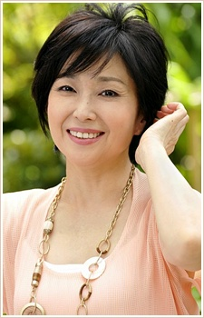
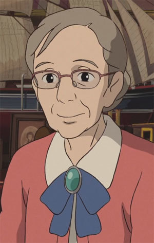

Keiko Takeshita is a Japanese voice actress. She starred in the Japanese version of From Up on Poppy Hill as Hana Matsuzaki.
- Gender: Female
- Birthday: September 15, 1953
- Hometown: Aichi, Japan
- Husband: Teruo Sekiguchi

|  |
Keiko Takeshita is a Japanese voice actress. She starred in the Japanese version of From Up on Poppy Hill as Hana Matsuzaki.
|
|---|
|  | Sadako | The Secret World of Arrietty | Sadako is the aunt of Sho. |
Go Back to Main Page |
Go Back to Homepage |
|
|
|
OR |
|